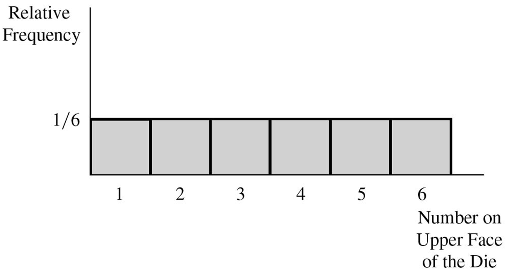
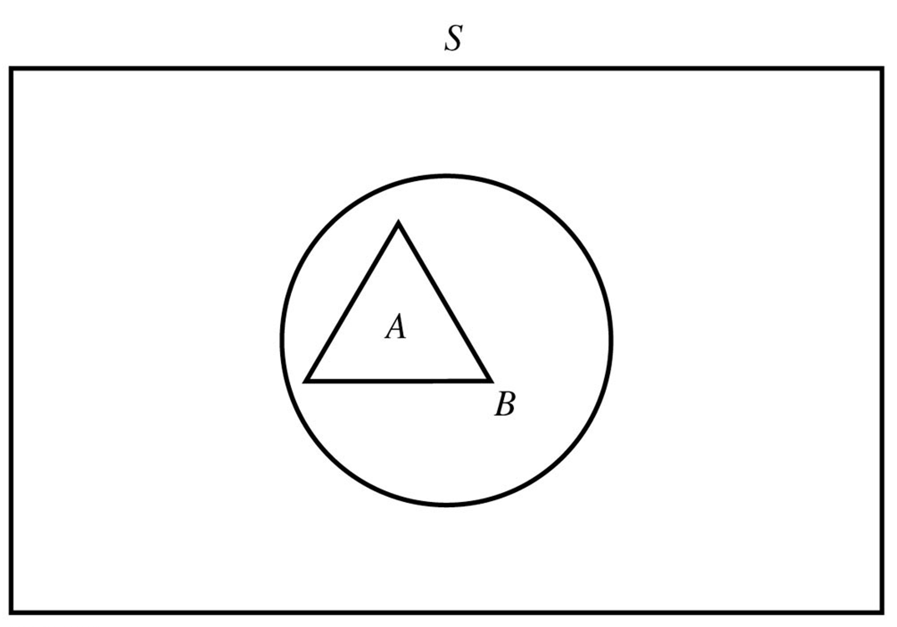
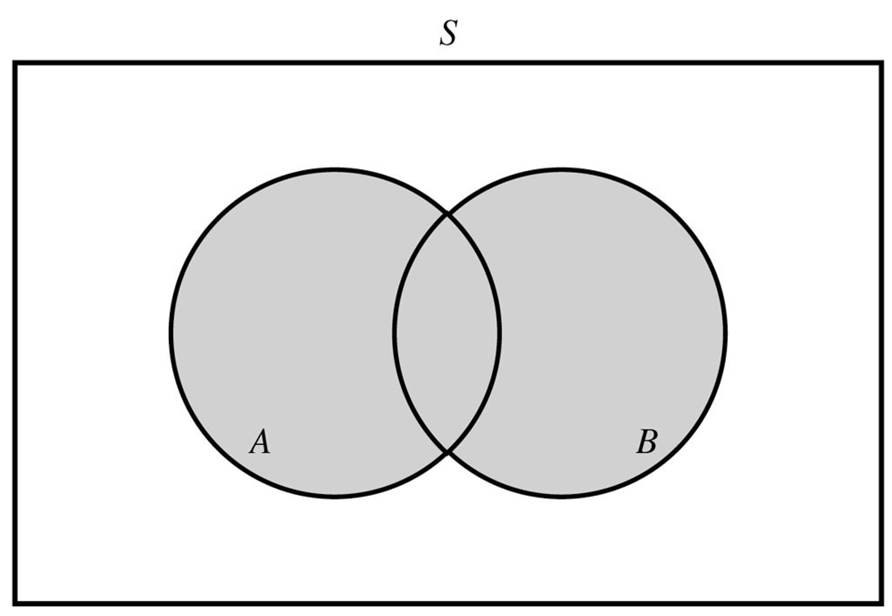
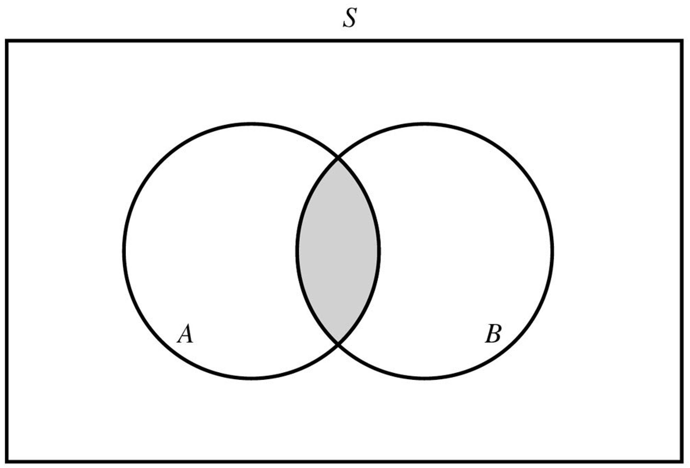
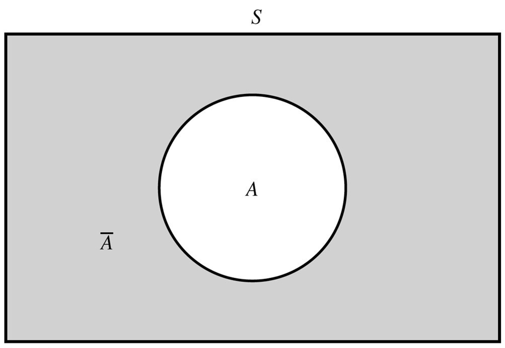
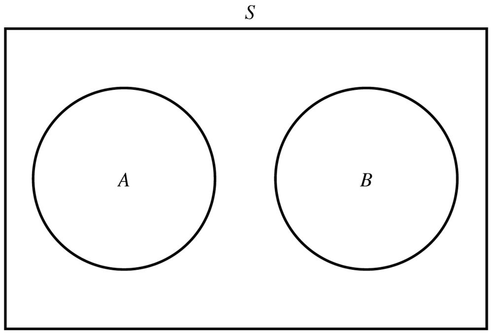
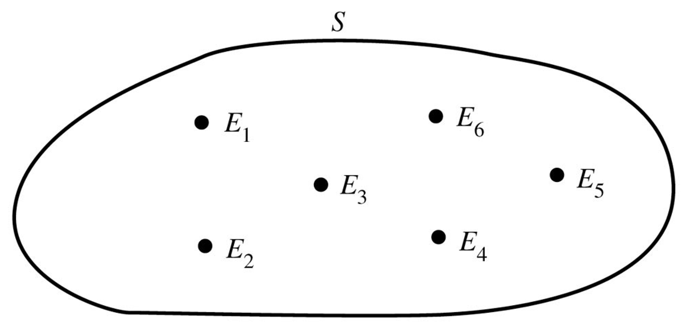
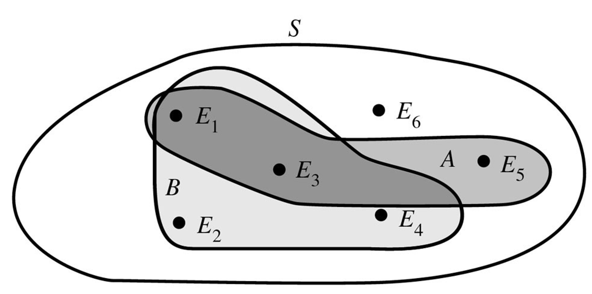
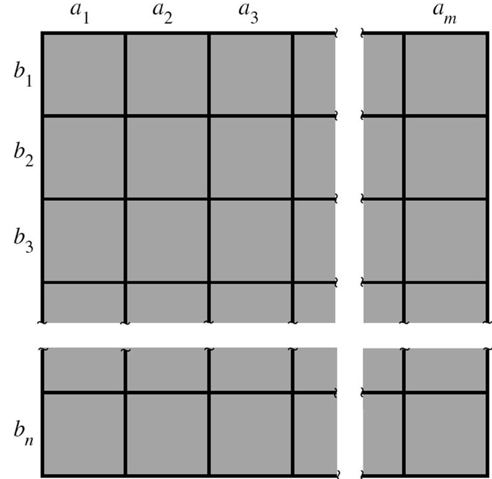
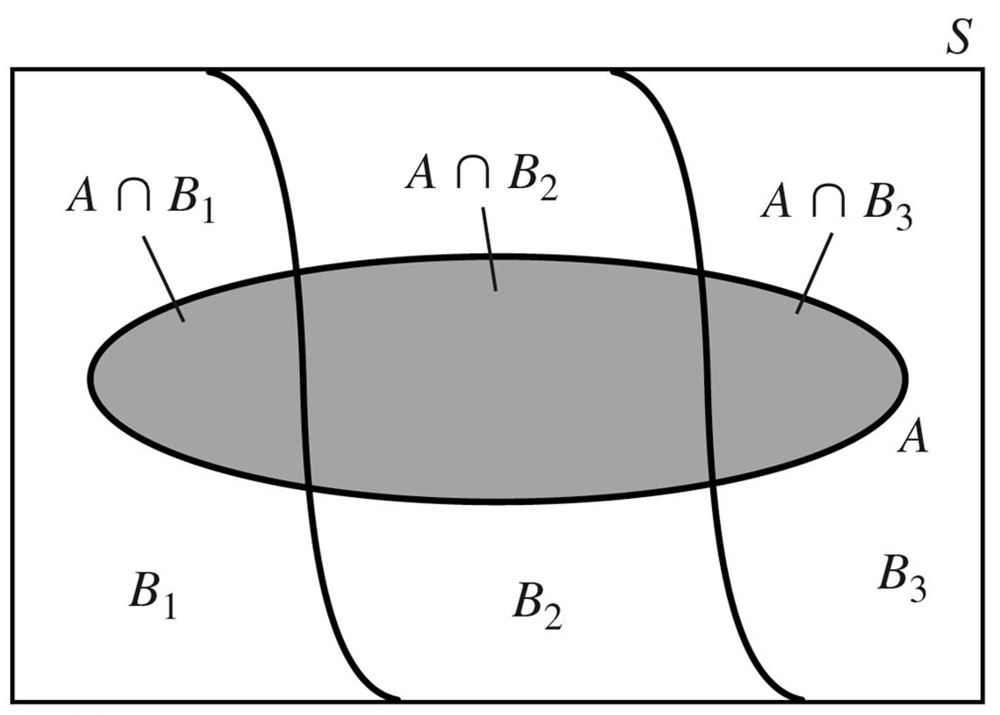

Introduction to Probability
June 17, 2025
Tuesday
Introduction
The first few lectures come from Mathematical Statistics with Applications, by Wackerly.
- We must understand the underlying probability and random variable theory before moving into the Bayesian world.
We will be covering the following chapters:
- Chapter 2: probability theory
- Chapter 3: discrete random variables
- Chapter 4: continuous random variables
2.2: Probability and Inference
In statistics we use probabilities to make inference, or draw conclusions.
Consider a gambler who wishes to make an inference concerning the balance, or fairness, of a die.
- If the die were perfectly balanced, one-sixth of the measurements in this population would be 1s, one-sixth would be 2s, one-sixth would be 3s, etc.

2.2: Probability and Inference
- Using the scientific method, the gambler proposes the hypothesis that the die is balanced, and he seeks observations from nature to contradict the theory, if false.
- A sample of ten tosses is selected from the population by rolling the die ten times.
- All ten tosses result in 1s. 🧐
- The gambler looks upon this output and concludes that his hypothesis is not in agreement with nature and, thus, the die is not balanced.
- The gambler rejected his hypothesis not because it is impossible to throw ten 1s in ten tosses of a balanced die, but because it is highly improbable.
2.3: Review of Set Notation
Suppose the elements \(a_1\), \(a_2\), and \(a_3\) are in the set \(A\). \[A = \left\{ a_1, a_2, a_3 \right\}\]
- Notation: capital letters \(\to\) sets of points.
We can denote the set of all elements under consideration with \(S\), the universal set.

2.3: Review of Set Notation
\(A \subset B\):
- For any two sets \(A\) and \(B\), we say that \(A\) is a subset of \(B\) if every point in \(A\) is also in \(B\).
2.3: Review of Set Notation
- \(A \cup B\):
- The union of \(A\) and \(B\) is the set of all points in either \(A\) or \(B\).
- i.e., the union has all points that are in at least one of the sets.

2.3: Review of Set Notation
- \(A \cap B\):
- The intersection of \(A\) and \(B\) is the set of all points in both \(A\) and \(B\).
- i.e., the intersection is where the two sets overlap.

2.3: Review of Set Notation
- \(\bar{A}\) or \(A^c\):
- The complement of \(A\) is the set of points that are in \(S\), but not in \(A\).
- \(A \cup \bar{A} = S\).

2.3: Review of Set Notation
- \(A \cap B = \emptyset\):
- \(A\) and \(B\), are said to be disjoint or mutually exclusive when they have no points in common.
- Related: for any set \(A\), we know that \(A\) and \(\bar{A}\) are mutually exclusive.

2.3: Review of Set Notation
- Fast forwarding through set algebra, we need to know these distributive laws:
\[ \begin{align*} A \cap (B \cup C) &= (A \cap B) \cup (A \cap C) \\ A \cup (B \cap C) &= (A \cup B) \cap (A \cup C) \\ (A \cap B)^c &= A^c \cup B^c \\ (A \cup B)^c &= A^c \cap B^c \end{align*} \]
2.3: Review of Set Notation
Suppose two dice are tossed and the numbers on the upper faces are observed.
Let \(S\) denote the set of all possible pairs that can be observed.
- e.g., (2, 3) indicates that a 2 was observed on the first die and a 3 on the second.
What are the observations in \(S\)?
2.3: Review of Set Notation
- Define the following subsets of \(S\) and list their points:
- \(A\): The number on the second die is even.
- \(B\): The sum of the two numbers is even.
- \(C\): At least one number in the pair is odd.
- \(A\): The number on the second die is even.
2.3: Review of Set Notation
- List the points in the following:
- \(A \cup B\)
- \(A \cap B\)
- \(A \cap C\)
- \(B \cup C\)
- \(A \cup B\)
2.3: Review of Set Notation
- List the points in the following:
- \(A \cup B^c\)
- \(A^c \cap B\)
- \(A \cap C^c\)
- \(B \cup C^c\)
- \(A \cup B^c\)
2.4: A Probabilistic Model for an Experiment
- Experiment: the process by which an observation is made.
- Examples:
- coin and die tossing,
- measuring the systolic blood pressure of an individual,
- determine the number of bacteria per cubic centimeter in a serving of processed food.
- Examples:
2.4: A Probabilistic Model for an Experiment
- Events: the outcomes possible in an experiment.
- Notation: capital leters
- Examples for bacteria observation:
- \(A\): Exactly 110 bacteria are present.
- \(B\): More than 200 bacteria are present.
- \(C\): The number of bacteria present is between 100 and 300.
2.4: A Probabilistic Model for an Experiment
Sample space, \(S\): the set consisting of all possible sample points.
The following Venn diagram shows an example of six simple events in \(S\),

2.4: A Probabilistic Model for an Experiment
Compound event: A collection of sample points in a discrete sample space, \(S\).
e.g., suppose we define two events, \(A\) and \(B\),

2.4: A Probabilistic Model for an Experiment
- Suppose \(S\) is a sample space associated with an experiment. To every event \(A\) in \(S\) (i.e., \(A \subset S\)), we assign a number, \(P[A]\), called the probability of \(A\), such that the follow axioms hold:
- Axiom 1: \(P[A] \ge 0\).
- Axiom 2: \(P[S] = 1\).
- Axiom 3: If \(A_1, A_2, ..., A_n\) form a sequence of pairwise mutually exclusive (\(A_i \cap A_j = \emptyset\) if \(i \ne j\)) events in \(S\), then \[P[A_1 \cup A_2 \cup \ ... \cup \ A_n] = \sum_{i=1}^n P[A_i] \]
2.4: A Probabilistic Model for an Experiment
- Suppose a sample space consists of five simple events, \(E_1\), \(E_2\), \(E_3\), \(E_4\), and \(E_5\).
- If \(P[E_1] = P[E_2] = 0.15\), \(P[E_3] = 0.4\), and \(P[E_4] = 2P[E_5]\), find the probabilities of \(E_4\) and \(E_5\).
2.4: A Probabilistic Model for an Experiment
- Suppose a sample space consists of five simple events, \(E_1\), \(E_2\), \(E_3\), \(E_4\), and \(E_5\).
- If \(P[E_1] = 3P[E_2] = 0.3\), find the probabilities of the remaining simple events if you know that the remaining simple events are equally probable.
2.5: Calculating the Probability of an Event
- The following are steps used to find the probability of an event:
- Define the experiment and clearly determine how to describe one simple event.
- Define \(S\): list the simple events associated with the experiment.
- Assign reasonable probabilities to the sample points in \(S\); remember that \(P[E_i] \ge 0\) and \(\sum_i P[E_i] = 1\).
- Define the event of interest, \(A\), as a specific collection of sample points.
- Find \(P[A]\) by summing the probabilities of the sample points in \(A\).
2.5: Calculating the Probability of an Event
- Suppose we toss a balanced coin three times. Find the probability that 2/3 tosses result in heads.
- Define the experiment and clearly determine how to describe one simple event.
- Define \(S\): list the simple events associated with the experiment.
- Define the experiment and clearly determine how to describe one simple event.
2.5: Calculating the Probability of an Event
- Suppose we toss a balanced coin three times. Find the probability that 2/3 tosses result in heads.
- Define \(S\): list the simple events associated with the experiment.
- Assign reasonable probabilities to the sample points in \(S\); remember that \(P[E_i] \ge 0\) and \(\sum_i P[E_i] = 1\).
- Define \(S\): list the simple events associated with the experiment.
2.5: Calculating the Probability of an Event
- Suppose we toss a balanced coin three times. Find the probability that 2/3 tosses result in heads.
- Define the event of interest, \(A\), as a specific collection of sample points.
- Find \(P[A]\) by summing the probabilities of the sample points in \(A\).
- Define the event of interest, \(A\), as a specific collection of sample points.
2.6: Tools for Counting Sample Points
Let us discuss some results from combinatorial theory.
We want to be able to count the total number of sample points in the sample space, \(S\).
Sometimes we use this method to efficiently find probabilities.
- If a sample space contains \(N\) equiprobable sample points and an event \(A\) contains exactly \(n_a\) sample points, then
\[ P[A] = \frac{n_a}{N} \]
2.6: Tools for Counting Sample Points
Theorem:
- With \(m\) elements \(a_1\), \(a_2\), …, \(a_m\) and \(n\) elements \(b_1\), \(b_2\), …, \(b_n\), it is possible for form \(mn = m \times n\) pairs containing one element from each group.

2.6: Tools for Counting Sample Points
Consider an experiment that consists of recording the birthday for each of 20 randomly selected persons.
Ignoring leap years and assuming that there are only 365 possible distinct birthdays, find the number of points in the sample space \(S\) for this experiment.
2.6: Tools for Counting Sample Points
Consider an experiment that consists of recording the birthday for each of 20 randomly selected persons.
If we assume that each of the possible sets of birthdays is equiprobable, what is the probability that each person in the 20 has a different birthday?
2.6: Tools for Counting Sample Points
- Permutation: an ordered arrangement of \(r\) distinct objects, \(P_r^n\).
\[ P_r^n = \frac{n!}{(n-r)!} \]
- Combination: the number of subsets formed from \(n\) objects taken \(r\) at a time, \(C_r^n\) or \({n \choose r}\).
\[ C_r^n = {n \choose r} = \frac{P_r^n}{r!} = \frac{n!}{r(n-r)!} \]
2.6: Tools for Counting Sample Points
- Remember, factorials are defined as follows:
\[ n! = n \times (n-1) \times (n-2) \times ... \times 2 \times 1 \]
- With special factorials:
\[ \begin{align*} 1! &= 1 \\ 0! &= 1 \end{align*} \]
2.6: Tools for Counting Sample Points
- Suppose that an assembly operation in a manufacturing plant involves four steps, which can be performed in any sequence. If the manufacturer wishes to compare the assembly time for each of the sequences, how many different sequences will be involved in the experiment?
2.6: Tools for Counting Sample Points
- A company orders supplies from \(M\) distributors and wishes to place \(n\) orders \((n<M).\) Assume that the company places the orders in a manner that allows every distributor an equal chance of obtaining any one order and there is no restriction on the number of orders that can be placed with any distributor. Find the probability that a particular distributor gets exactly \(k\) orders \((k \le n)\).
2.7: Conditional Prob. and Independence of Events
- Conditional probability of an event \(A\) given that an event \(B\) has occurred is as follows
\[ P[A|B] = \frac{P[A \cap B]}{P[B]}, \]
so long as \(P[B] > 0\).
Algebraically equivalent,
\[ P[A \cap B] = P[A|B] \times P[B] \ \ \ \ \ \& \ \ \ \ \ P[B] = \frac{P[A \cap B]}{P[A|B]} \]
2.7: Conditional Prob. and Independence of Events
- Suppose that a balanced die is tossed once. Find the probability of rolling a 1, given that an odd number was obtained.
2.7: Conditional Prob. and Independence of Events
- Two events \(A\) and \(B\) are said to be independent events if any of the following holds:
\[ \begin{align*} P[A|B] &= P[A] \\ P[B|A] &= P[B] \\ P[A \cap B] &= P[A] P[B] \end{align*} \]
- Otherwise, we say that \(A\) and \(B\) are dependent events.
2.7: Conditional Prob. and Independence of Events
Consider the following events in the toss of a single die:
- \(A\): Observe an odd number.
- \(B\): Observe an even number.
- \(C\): Observe a 1 or 2.
Are \(A\) and \(B\) independent events?
Are \(A\) and \(C\) independent events?
2.8: Two Laws of Probability
Theorem: The Multiplicative Law of Probability
- The probability of the intersection of two events \(A\) and \(B\) is
\[\begin{align*}P[A\cap B] &= P[A] P[B|A] \\ &= P[B] P[A|B]\end{align*}\]
- Note that if \(A\) and \(B\) are independent, then
\[P[A \cap B] = P[A] P[B]\]
2.8: Two Laws of Probability
Theorem: The Additive Law of Probability
- The probability of the union of two events \(A\) and \(B\) is
\[P[A \cup B] = P[A] + P[B] - P[A \cap B] \]
- Note that if \(A\) and \(B\) are mutually exclusive, then \(P[A \cap B] = 0\) and
\[P[A \cup B] = P[A] + P[B]\]
2.8: Two Laws of Probability
Theorem: The Complement Rule
- If \(A\) is an event, then
\[ \begin{align*} P[A] + P[A^c] &= 1 \\ P[A] &= 1 - P[A^c] \\ P[A^c] &= 1 - P[A] \\ \end{align*} \]
2.9: Calculating the Probability of an Event
The steps used to define the probability of an event:
Define the experiment.
Visualize the nature of the sample points. Identify a few to clarify your thinking.
Write an equation expressing the event of interest (\(A\)) as a composition of two or more events, using usions, intersections, and/or complements. Make certain that event \(A\) and the event implied by the compsotion represnt the sameset of sample points.
Apply the additive and multiplicative laws of probability in the compositions obtained in step 3 to find \(P[A]\).
2.9: Calculating the Probability of an Event
- It is known that a patient with a disease with respond to treatment with probability equal to 0.9. If three patients with the disease are treated independently, find the probability that at least one will respond.
2.10: The Law of Total Probability and Bayes’ Rule
- Partition:
- For some positive integer \(k\), let the sets \(B_1, B_2, ..., B_k\) be such that
- \(S = B_1 \cup B_2 \cup ... \cup B_k\)
- \(B_1 \cap B_j = \emptyset\), for \(i \ne j\)
- Then the collection of sets \(\{B_1, B_2, ..., B_k\}\) is said to be a partition of \(S\).
- For some positive integer \(k\), let the sets \(B_1, B_2, ..., B_k\) be such that
2.10: The Law of Total Probability and Bayes’ Rule
- We also know that if \(A\) is any subset of \(S\) and \(\{B_1, B_2, ..., B_k\}\) is a partition of \(S\), \(A\) can be decomposed:
\[ A = (A \cap B_1) \cup (A \cap B_2) \cup \ ... \ \cup (A \cap B_k) \]

2.10: The Law of Total Probability and Bayes’ Rule
Theorem:
- Assume that \(\{ B_1, B_2, ..., B_k \}\) is a partition of \(S\) such that \(P[B_i] > 0\) for \(i = 1, 2, ..., k\). Then for any event \(A\),
\[ P[A] = \sum_{i=1}^k P[A|B_i] P[B_i] \]
2.10: The Law of Total Probability and Bayes’ Rule
Theorem: Bayes’ Rule
- Assume that \(\{ B_1, B_2, ..., B_k \}\) is a partition of \(S\) such that \(P[B_i] > 0\) for \(i = 1, 2, ..., k\). Then
\[ \begin{align*} P[B_j | A] &= \frac{P[B_j \cap A]}{P[A]} \\ &= \frac{P[B_j \cap A]}{P[A \cap B_1] + ... + P[A \cap B_k]} \\ &= \frac{P[B_j] \times P[A|B_j]}{P[B_1]\times P[A|B_1] + ... + P[B_k] \times P[A|B_k]} \\ &= \frac{P[B_j] \times P[A|B_j] }{\sum_{i=1}^k P[A|B_i] \times P[B_i]} \end{align*} \]
2.10: The Law of Total Probability and Bayes’ Rule
Of the travelers arriving at a small airport, 60% fly on major airlines, 30% fly on privately owned planes, and the remainder fly on commercially owned planes not belonging to a major airline. Of those traveling on major airlines, 50% are traveling for business reasons, whereas 60% of those arriving on private planes and 90% of those arriving on other commercially owned planes are traveling for business reasons.
Suppose that we randomly select one person arriving at this airport. What is the probability that the person:
- is traveling on business?
2.10: The Law of Total Probability and Bayes’ Rule
Of the travelers arriving at a small airport, 60% fly on major airlines, 30% fly on privately owned planes, and the remainder fly on commercially owned planes not belonging to a major airline. Of those traveling on major airlines, 50% are traveling for business reasons, whereas 60% of those arriving on private planes and 90% of those arriving on other commercially owned planes are traveling for business reasons.
Suppose that we randomly select one person arriving at this airport. What is the probability that the person:
- is traveling for business on a privately owned plane?
2.10: The Law of Total Probability and Bayes’ Rule
Of the travelers arriving at a small airport, 60% fly on major airlines, 30% fly on privately owned planes, and the remainder fly on commercially owned planes not belonging to a major airline. Of those traveling on major airlines, 50% are traveling for business reasons, whereas 60% of those arriving on private planes and 90% of those arriving on other commercially owned planes are traveling for business reasons.
Suppose that we randomly select one person arriving at this airport. What is the probability that the person:
- arrived on a privately owned plane, given that the person is traveling for business reasons?
2.10: The Law of Total Probability and Bayes’ Rule
Of the travelers arriving at a small airport, 60% fly on major airlines, 30% fly on privately owned planes, and the remainder fly on commercially owned planes not belonging to a major airline. Of those traveling on major airlines, 50% are traveling for business reasons, whereas 60% of those arriving on private planes and 90% of those arriving on other commercially owned planes are traveling for business reasons.
Suppose that we randomly select one person arriving at this airport. What is the probability that the person:
- is traveling on business, given that the person is flying on a commercially owned plane?
2.10: The Law of Total Probability and Bayes’ Rule
Let \(D\) be the event that a person has a rare disease with an incidence rate of 1% in the population. i.e., \(P[D]=0.01\). Suppose a machine is used to diagnose the disease. Let \(C\) be the eventt aht the disease is confirmed as the diagnosis. Suppose that the probaiblity of the machine falsely confirming the disease when one doesn’t have it (aka, a false positive) is \(P[C|D^c] = 0.15\). Further, the probability that the machine correctly confirms the disease is \(P[C|D]=0.95\).
Now, suppose that the machine confirms that a person has the disease. What is the probability that the person actually has the disease? i.e., find \(P[D|C]\).
2.10: The Law of Total Probability and Bayes’ Rule
- In a production line, 8% of all items produced are defective, 75% of all defective items are fully inspected, while 10% of all non-defective items go through a complete inspection. Given that an item is completely inspected, what is the probability that it is defective?
2.11: Numerical Events and Random Variables
Random variable:
- A real-valued function for which the domain is a sample space.
Let \(Y\) denote a variable to be measured in an experiment.
- Because the value of \(Y\) will vary depending on the outcome of the experiment, it is called a random variable.
- Each point in the sample space will be assigned a real number denoting the value of \(Y\).
- That is, it may vary from one sample point to another.
2.11: Numerical Events and Random Variables
- Define an experiment as tossing two coins and observing the results. Let \(Y\) equal the number of heads obtained.
- Identify the sample points in S.
- Assign a value to each sample point
- Identify the sample points in S.
2.11: Numerical Events and Random Variables
- Define an experiment as tossing two coins and observing the results. Let \(Y\) equal the number of heads obtained.
- Identify the sample points associated with each value of the random variable \(Y\).
- Compute the probabilities for each value of \(Y\).
- Identify the sample points associated with each value of the random variable \(Y\).
Homework
- 2.15
- 2.18
- 2.32
- 2.33
- 2.51
- 2.54
- 2.73
- 2.77
- 2.94
- 2.106
- 2.107
- 2.114
- 2.120
- 2.128
- 2.140
- 2.141